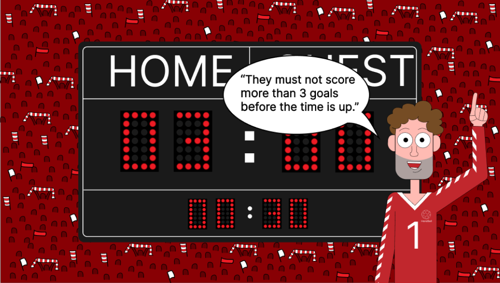
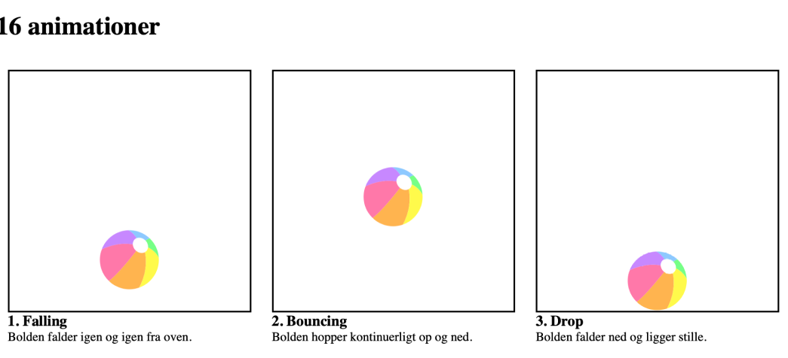

SPIL
I det her forløb har jeg lært at designe og programmere et interaktivt spil, som fungerer både på mobil og desktop. Jeg har udviklet spillets mekanik, herunder liv og tid, samt skabt to slutninger baseret på brugerens præstation. Det var også i det her forløb vi blev introduceret til JavaScript.
SPIL →JAVESCRIPT
Jeg har lært, at funktioner i JavaScript udfører opgaver og kan tage -og returnere værdier. Event listeners gør det muligt at reagere på brugerinteraktioner som klik.
JAVASCRIPT →ILLUSTRATOR
Jeg har lært at bruge Illustrator til at skabe vektorgrafik ved hjælp af værktøjer som pen-værktøjet til at tegne stier, formværktøjer til at lave basisformer og Pathfinder til at kombinere eller redigere dem. Jeg har også arbejdet med farveværktøjer som gradienter og opacitet, samt brugt lag til at organisere designs.
Jeg har lært at bruge tekstværktøjet til typografi, og masker som Clipping Masks til at skjule eller fremhæve dele af objekter. Til sidst har jeg fået erfaring med at eksportere projekter i forskellige filformater til både web og svg.
 ILLUSTRATOR →CSS ANIMATIONER
Jeg har lært at bruge CSS-animationer og CSS-transforms til at skabe bevægelse og ændre elementers placering, rotation og skalering. Animationer laves med keyframes, hvor man definerer trin i ændringerne, og knytter dem til elementer med egenskaber som animation-name og animation-duration.
Transforms bruges til at flytte (translate), skalere (scale) eller rotere (rotate) elementer, og man kan justere omdrejningspunktet med transform-origin. Dette kan evt. ses i nogen af de øvelser jeg har linket til.
 CSS ANIMATIONER →